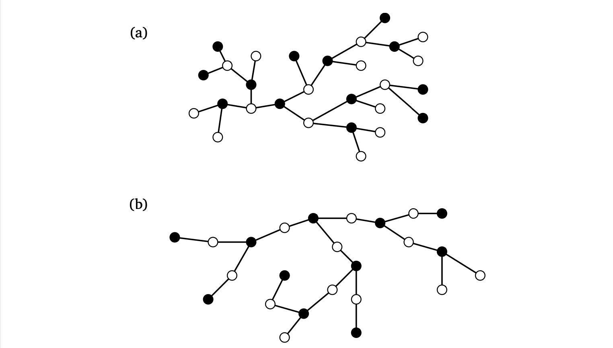
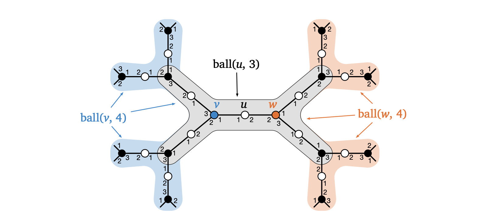

参考：Juho Hirvonen and Jukka Suomela, Juho Hirvonen and Jukka Suomela
看起来很舒服的一本书。
我们考虑一类特殊的图：biregular trees。即一个(d,δ)-biregular tree 是一个树，其中结点可以分成两个不相交的集合，其中一部分称为 active nodes（或 black node），另一部分称为 passive nodes（或 white node）。
每个 active node 都和且仅和d 或 1 个 passive node 相连，而每个 passive node 都和且仅和δ 或 1 个 active node 相连。
例子如下，(a) 图是(3,3)-biregular tree，(b) 图是(3,2)-biregular tree：

接下来我们考虑这样 graph 表示的 network 上的分布式算法。
特别地，我们考虑一类问题 bipartite locally verifiable problem：形式化地，每个这样的问题都有三个参数(Σ,A,P)，其中
- Σ 是一个 finite alphabet；
- A,P 都是 set of multisets of elements from Σ。其中，A 中的 multiset 大小都是d，P 中的 multiset 大小都是δ。
要解决这样的一个 problem，我们需要让所有的 active node 给自己相邻的边进行标记，标记为Σ 中的元素，使得：对于每个 active node v，如果它有d 个相邻的边，假设它相邻的边被标记为s1,s2,...,sd，那么[s1,s2,...,sd]∈A，并且对于每个 passive node u，如果它有δ 个相邻的边，假设它相邻的边被标记为t1,t2,...,tδ，那么[t1,t2,...,tδ]∈P。
换句话说，A,P 分别表示了 active node 和 passive node 的相邻边合法标记的真值表。
我们看三个例子：譬如对于(3,3)-biregular tree，我们要用 5 种颜色对边进行染色，使得每个 node 相邻的边的颜色都不一样。那么Σ={1,2,3,4,5} 表示五种颜色，
A=P={[x,y,z]:x,y,z∈Σ且x,y,z两两不同},
其中我们用[x,y,z] 表示一个 multiset。
再看另一个例子：maximal matching。这个问题比较 tricky，我们需要Σ={M,U,P}，其中
- M 表示一个边在 matching 中；
- U 表示一个边不在 matching 中，且该边的 active node 有相邻边在 matching 中；
- P 表示一个边不在 matching 中，且该边的 active node 没有相邻边在 matching 中。
那么 active node 的约束就是
A={[M,U,U],[P,P,P]},
意思是：每个 active node 要么有一条边在 matching 中，要么三条边都不在 matching 中。而 passive node 的约束是
P={[M,U,U],[M,P,U],[M,P,P],[U,U,U]}.
这里就比较 tricky 了。对于一个 passive node，它有几种情况：
- 有一条边在 matching 中。此时另外两条边的另一个端点（active node）可以有一条相邻的边在 matching 中，也可以没有；所以有三种情况[M,U,U],[M,U,P],[M,P,P]。
- 没有边在 matching 中。此时这三条边的另一个端点（active node）都必须有一条相邻的边在 matching 中；所以只能是[U,U,U]。
最后一个例子是 3-weak labeling，对于一个(3,2)-biregular tree，我们要用 3 种颜色对边进行染色，使得每个 active node 相邻的边的颜色只有 2 种，每个 passive node 相邻的边的颜色只有 1 种。即
Σ={1,2,3},A={[1,1,2],[1,1,3],[2,2,1],[2,2,3],[3,3,1],[3,3,2]},P={[1,1],[2,2],[3,3]}.
接下来我们考虑 round elimination 要干什么。
它是用于证明 lower bound 的工具，基本想法是：对于一个 bipartite locally verifiable problem Π0=(Σ0,A0,P0)，如果我们可以构造出一个新的 bipartite locally verifiable problem Π1=(Σ1,A1,P1)，使得：如果Π0 可以在t 轮内解决，那么Π1 可以在t−1 轮内解决。
那么这样的话，如果有问题Π0,Π1,...,Πt，那么Πt 应该是一个 trivial 的问题，它只需要 0 轮就可以解决，换句话说，解决Πt 不需要任何通讯。
如果我们发现Πt 不是一个 trivial 的问题，那么就说明Π0 至少需要t+1 轮才能解决，这就证明了Π0 的 lower bound。
形式化地，令Π0=(Σ0,A0,P0) 是(d,δ)-biregular tree 上的一个 bipartite locally verifiable problem，我们如此构造Π1=(Σ1,A1,P1)：
- active node 和 passive node 交换角色。换句话说，Π1 是(δ,d)-biregular tree 上的一个 bipartite locally verifiable problem；
- Σ1 是Σ0 的所有非空子集；
- active configurations A1 为
A1={[X1,...,Xδ]:X1,...,Xδ∈Σ1 s.t. ∀xi∈Xi, [x1,...,xδ]∈P0}.
- passive configurations P1 为
P1={[Y1,...,Yd]:Y1,...,Yd∈Σ1 s.t. ∃yi∈Yi, [y1,...,yd]∈A0}.
譬如回看之前的 3-weak labeling 问题，我们有
- Σ1={{1},{2},{3},{1,2},{1,3},{2,3},{1,2,3}};
- A1={[{1},{1}],[{2},{2}],[{3},{3}]};
-
P1={[{1},{1},{2}],[{1},{1},{3}],[{2},{2},{1}],[{2},{2},{3}],[{3},{3},{1}],[{3},{3},{2}]}
注意，按照定义P1 应该含有更多的情况，譬如[{1,2,3},{1,2,3},{1,2,3}]，因为根据定义只需要存在性。但是因为 active configurations 中只有单点集合，意味着合法的对边标记都是Σ1 中的那些单点集，因此在 passive configuration 时我们也只考虑了单点集的约束（其余情况必定不满足 active 约束）。
接下来我们进入最核心的部分：假设Π0 可以在T 轮内解决，我们证明Π1 可以在T−1 轮内解决。
对于每个Π1-active node u，在T−1 轮内，它都可以获取所有ball(u,T−1) 范围内的所有 node 的信息，其中ball(u,r) 表示以u 为中心，范围在r 内的子图。
基本想法是：对于u 的每个邻居v，v 是Π0-active node。然后u 需要去枚举所有可能的v 的Ball(v,T)。每枚举到一个情况，就可以运行Π0 的算法，然后得出一个(u,v) 边的标记（Σ0 中的标记）。
因此把所有可能的标记放在一起，就得到了一个集合S(u,v)∈Σ1，这个集合就是边(u,v) 在Π1 中的标记。
先看个例子，譬如下图(3,2)-biregular tree 中，一个Π1-active node u，它的ball(u,3) 区域由灰色画出。而它的两个邻居v,w 的ball(v,4),ball(w,4) 区域由蓝色 + 灰色和红色 + 灰色画出。
那么u 需要枚举蓝色范围所有可能的子图结构，使得它成为一个(3,2)-biregular tree。注意，u 至多只能知道灰色范围内的信息，因此它无从得知灰色外的图长什么样子！所以他需要枚举，枚举ball(v,T) 灰色外的图长什么样子。
然后u 运行Π0 的算法，得到(u,v) 边的标记。类似地得到(u,w) 边的标记。

我们接下来说明，这样做的确得到了一个满足Π1 约束的解。
是这样子的，我们考虑u 的邻居v1,...,vδ 以及上述模拟的输出x1∈S(u,v1),...,xδ∈S(u,vδ)。
注意，我们知道对于Π0 的算法，它应该可以处理所有可能的 graph 结构：即对于任意枚举到的情况，模拟算法得到的标记方式都应该满足Π0 中对u 的约束（这是 local 的），即
[x1,x2,...,xδ]∈P0.
这部分需要仔细想一下，就是无论外侧的图长什么样子，模拟Π0 上算法的结果一定会导致(u,v) 边的标记都符合Π0 中对u 的约束。看看上图，以 maximal matching 为例，思考一下。
而考虑Π1-passive node v，因为它的所有邻居都是Π0-active node，然后每个邻居u 都会去尝试枚举那些不在ball(u,T) 中部分的ball(v,T−1)。
即使多个u 之间枚举的结构之间不一定 compatible，即有可能不存在一个 underlying graph 同时满足所有u 枚举的结构，但是总是存在一个枚举的情况使得这些结构是合法的。因此，是存在一个x1∈S(u1,v),...,xd∈S(ud,v) 使得
[x1,x2,...,xd]∈A0.
总之，要尝试理解：以Π1-active node 去枚举的话，那么所有Π1-active 的约束都会被满足，因为 active node 枚举到的都是合法的情况；但Π1-passive 的约束不一定被满足，因为和 passive 相连的边是由 active node 决定的。但是总是会枚举到真实情况，从而满足约束，这也就是为什么这么构造Π1 的原因。